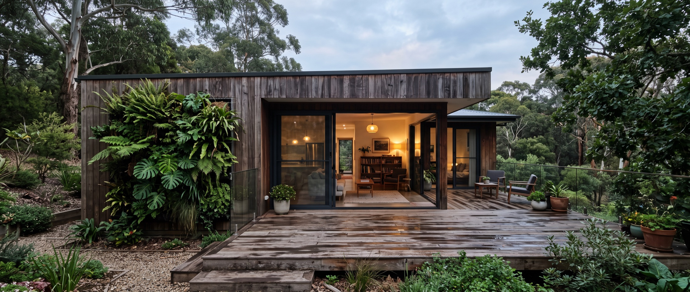
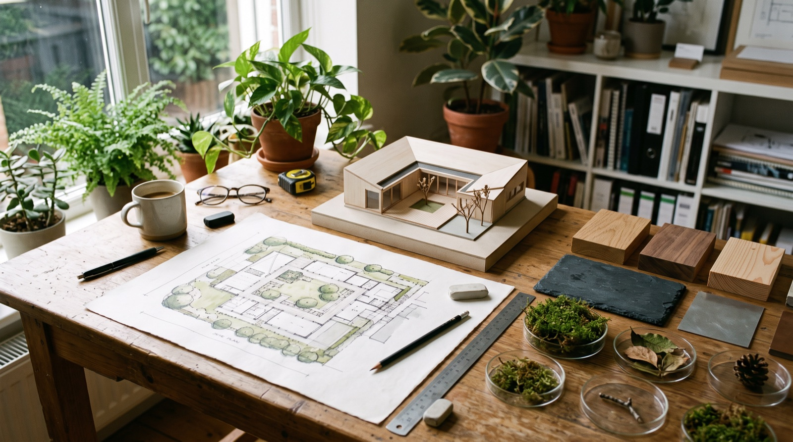
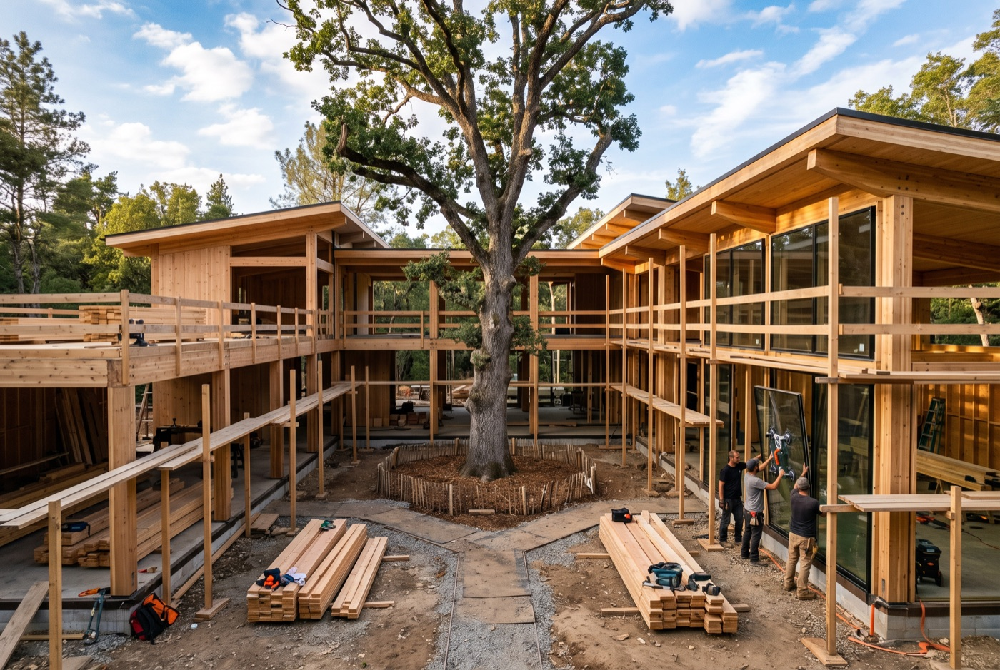
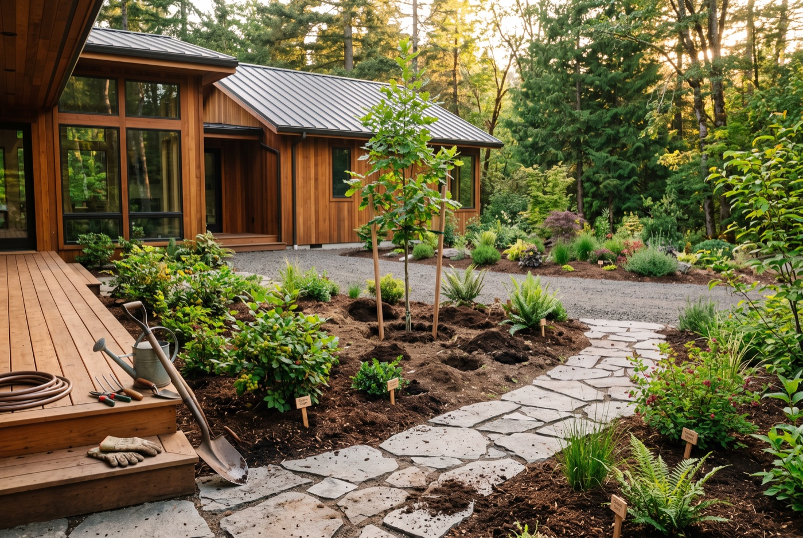
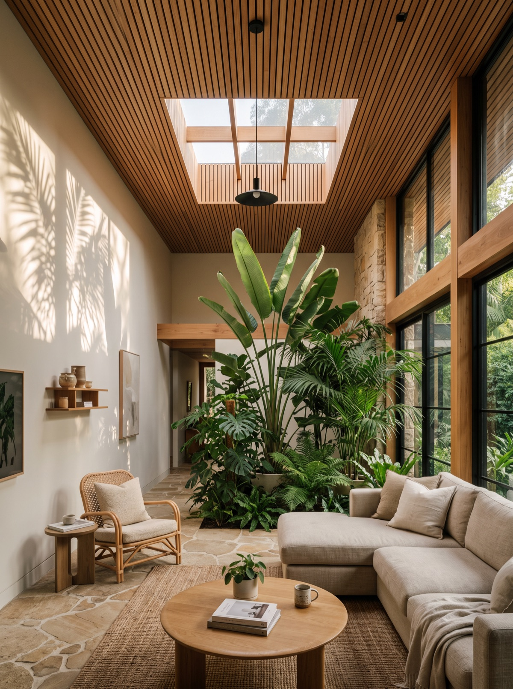
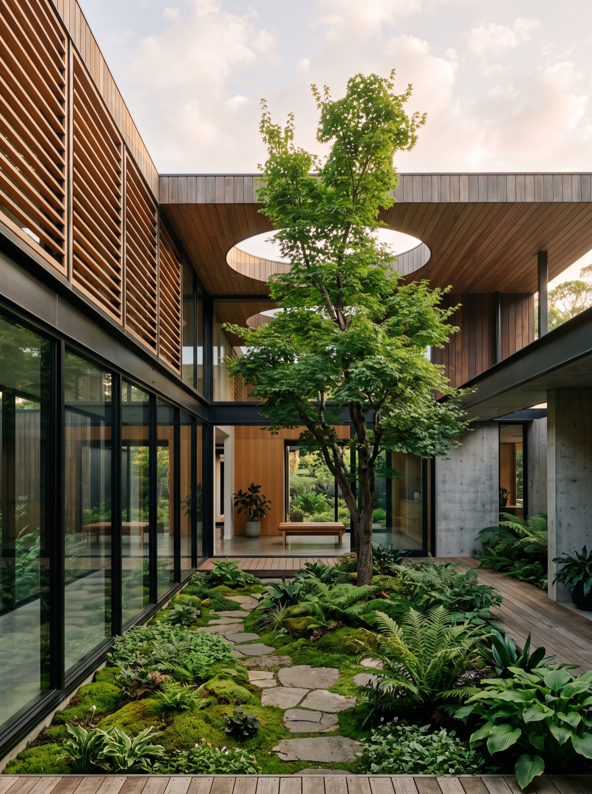
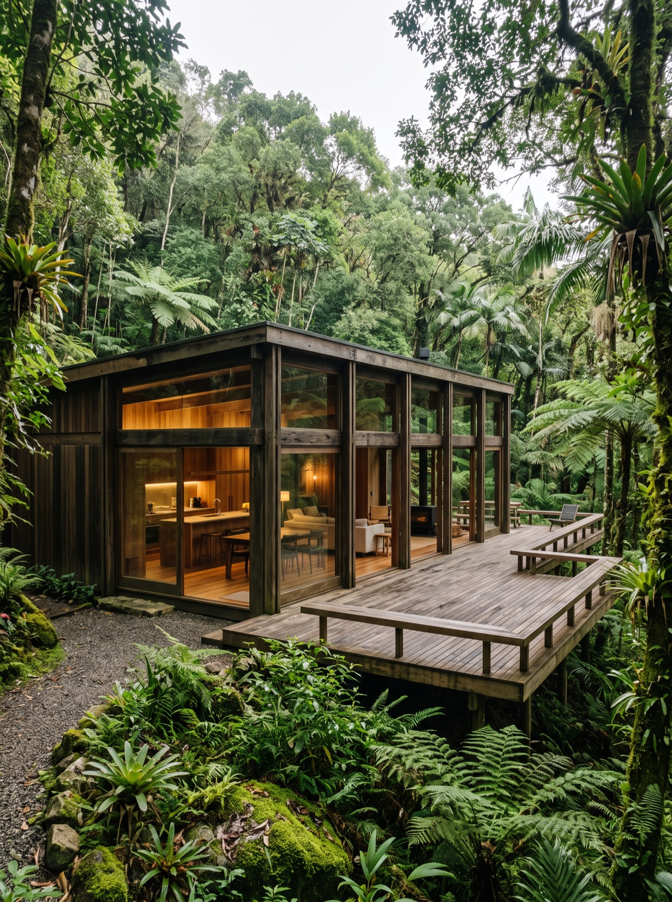
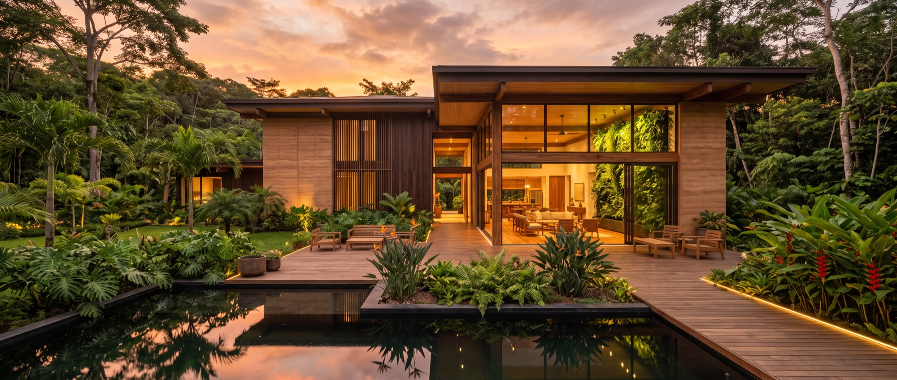

Construir é devolver à casa o que a natureza já sabia.
Somos uma construtora especializada em design biofílico. Cada projeto nasce da luz, da vegetação e dos materiais vivos, e é executado pela nossa própria equipe.
Uma construtora, do primeiro traço à última muda plantada.
Projeto, engenharia, paisagismo e execução em uma única equipe, para transformar diferentes conceitos em espaços que respiram.


O que fazemos
01.Arquitetura biofílica
Projeto autoral orientado por luz natural, ventilação cruzada, vegetação integrada e materiais de baixo impacto, do conceito à execução.
02.Construção e engenharia
Equipe própria de engenharia e obra, com madeira engenheirada, terra e pedra aplicadas com rigor técnico e cronograma transparente.
03.Paisagismo integrado
Jardins internos, coberturas verdes e pátios projetados junto com a arquitetura, e não depois dela. Espécies nativas e manutenção planejada.
04.Reformas regenerativas
Transformamos espaços existentes em ambientes vivos: abertura de vãos, jardins de inverno, iluminação natural e conforto térmico passivo.

Helena Sylva
Arquiteta fundadora · Direção criativa de todos os projetosFormada em Arquitetura e Urbanismo, com especialização em design biofílico e conforto ambiental. Fundou a Sylva para juntar, em uma só equipe, quem projeta, quem constrói e quem planta. Acompanha pessoalmente cada obra, do primeiro estudo do terreno à entrega das chaves.
- 15 anosde atuação
- 320+projetos
- Equipe própriade obra e paisagismo
Do terreno à casa viva,
em cinco etapas.
Todo projeto segue o mesmo caminho, para que você saiba exatamente onde estamos e o que vem a seguir.
- 01
Leitura do lugar
Insolação, ventos, vegetação existente e solo. É o terreno que orienta o projeto.
- 02
Conceito biofílico
Pátios, aberturas e materiais definidos junto com o programa. Onde entra a luz e onde nasce o verde.
- 03
Executivo e 3D
Modelagem realista, compatibilização e orçamento fechado antes de a obra começar.
- 04
Obra própria
Execução semanal acompanhada, com relatórios fotográficos e visitas agendadas.
- 05
Plantio e entrega
Paisagismo implantado, manual de manutenção e acompanhamento por seis meses.






O que nossos clientes dizem
sobre a Sylva
A Sylva entendeu que a gente queria morar dentro de um jardim, não ao lado de um. A casa é fresca sem ar-condicionado e a luz muda o dia inteiro. O processo foi leve e organizado.
CarolinaFlorianópolis - SCO escritório inteiro respira melhor. A parede verde e a claraboia mudaram a rotina da equipe. Prazo cumprido e obra limpa, coisa rara.
FernandoCuritiba - PRReformaram nossa casa dos anos 80 abrindo um pátio no meio. Hoje é o lugar preferido da família. Cuidado com cada detalhe, do projeto ao plantio.
JulianaPorto Alegre - RS
Entre em contatoToda casa viva começa por uma conversa.
Conte um pouco sobre o terreno ou o espaço que você tem em mente. A partir daí, marcamos uma visita para entender o lugar e os próximos passos.
Vamos conversar